[竹北] 咖啡羊行 Coffee&Co. 台元店
| 餐廳名稱: | 咖啡羊行 Coffee&Co. 台元店 |
|---|---|
| 地 址: | 竹北市惟馨街58號 |
| 營業時間: | 周一到週五 06:30~14:00 |
| 周六到週日 07:00~15:00 | |
| 每週三公休 尖峰時間用餐100分鐘 | |
| 電 話: | 0928-597-570 |
網路得知這家早午餐，第一家店開在新埔，第二家店開在竹北，看照片似乎不錯，假日早上衝過來了。合法停車格似乎不多，停車位要找一下。 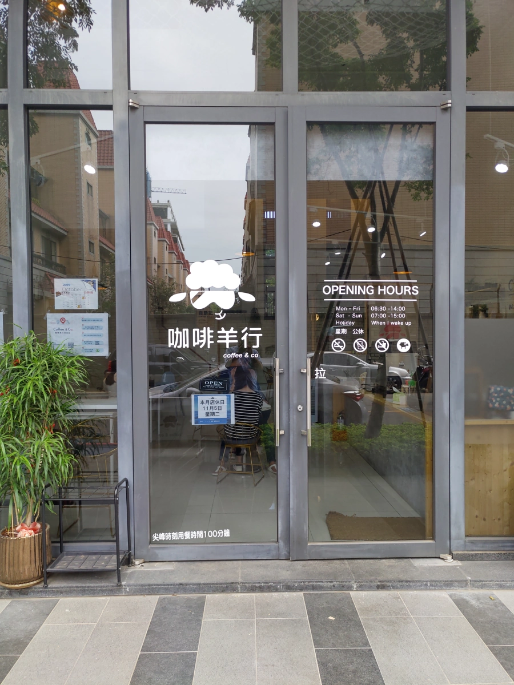
到的時候，一樓只剩三個吧檯位，還有二樓，不過沒上去二樓看。先坐吧檯位，約20分鐘後，換到四人坐位。 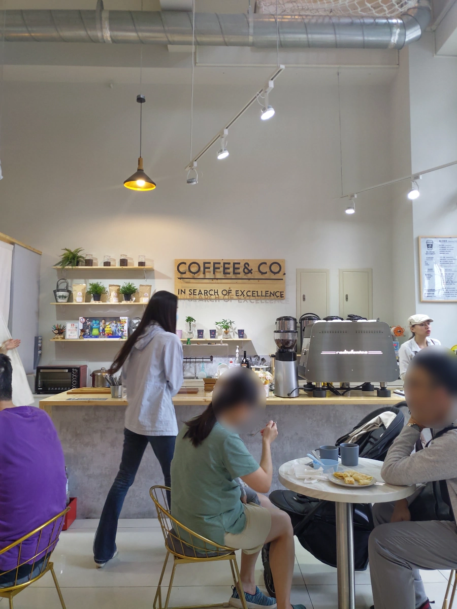
吧檯位的後面就是廚房，旁邊是餐具。人算多，服務人員都很忙。 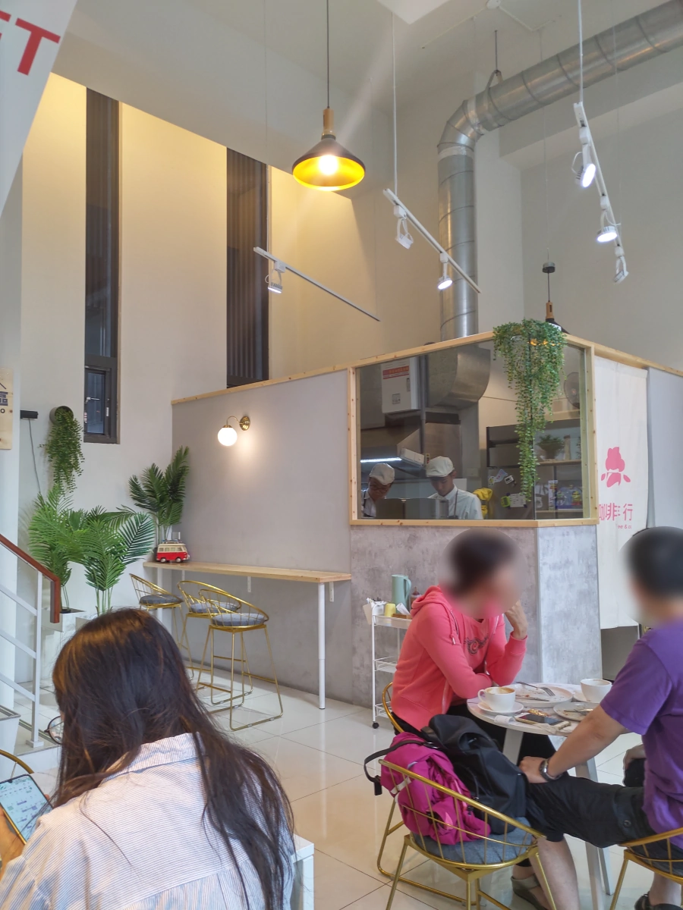
官方Facebook 粉絲頁 也有菜單， 跟現場菜單格式不一樣，不過內容一樣。
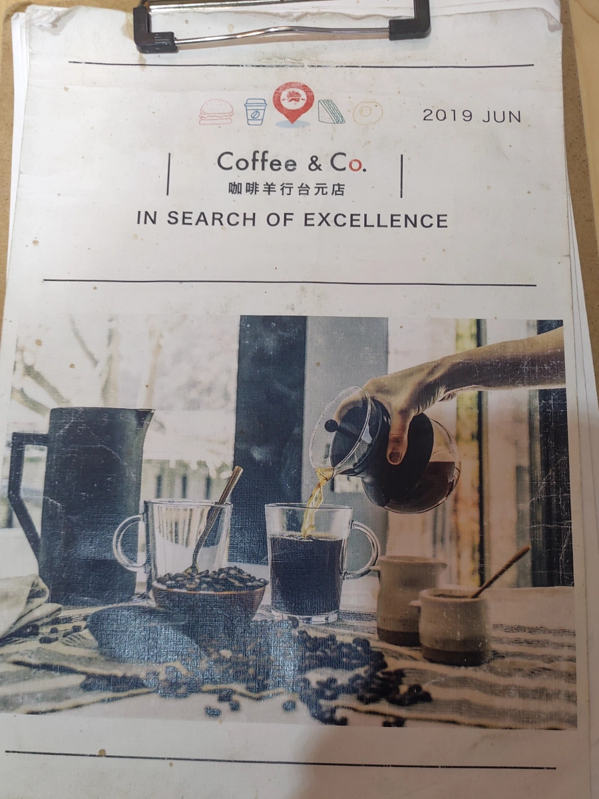 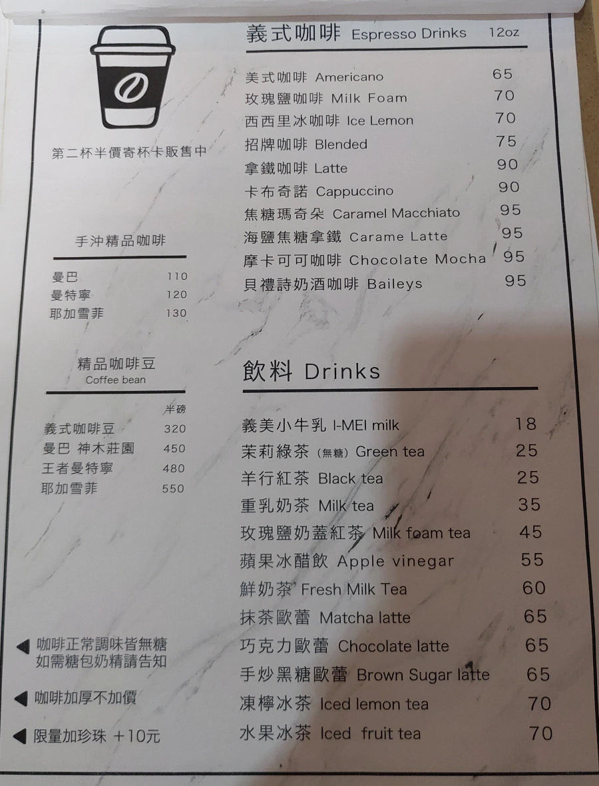
這兩頁大概是 咖啡羊行 的重點，比較有特色。 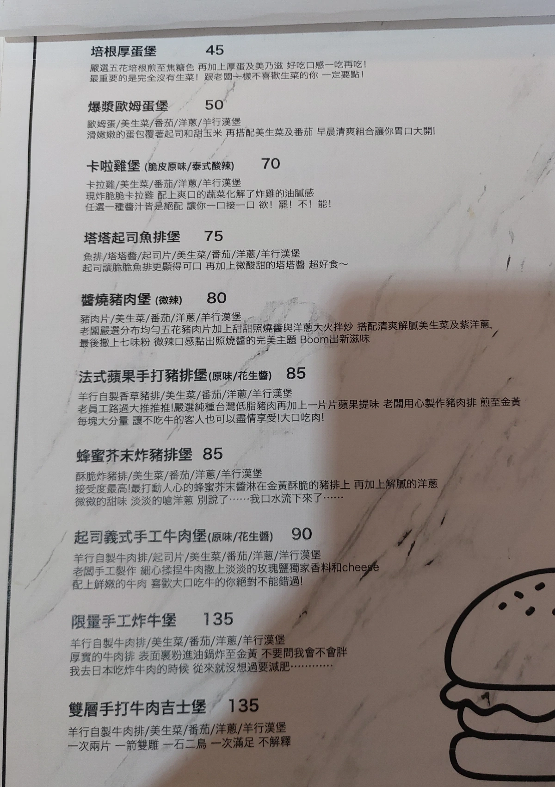 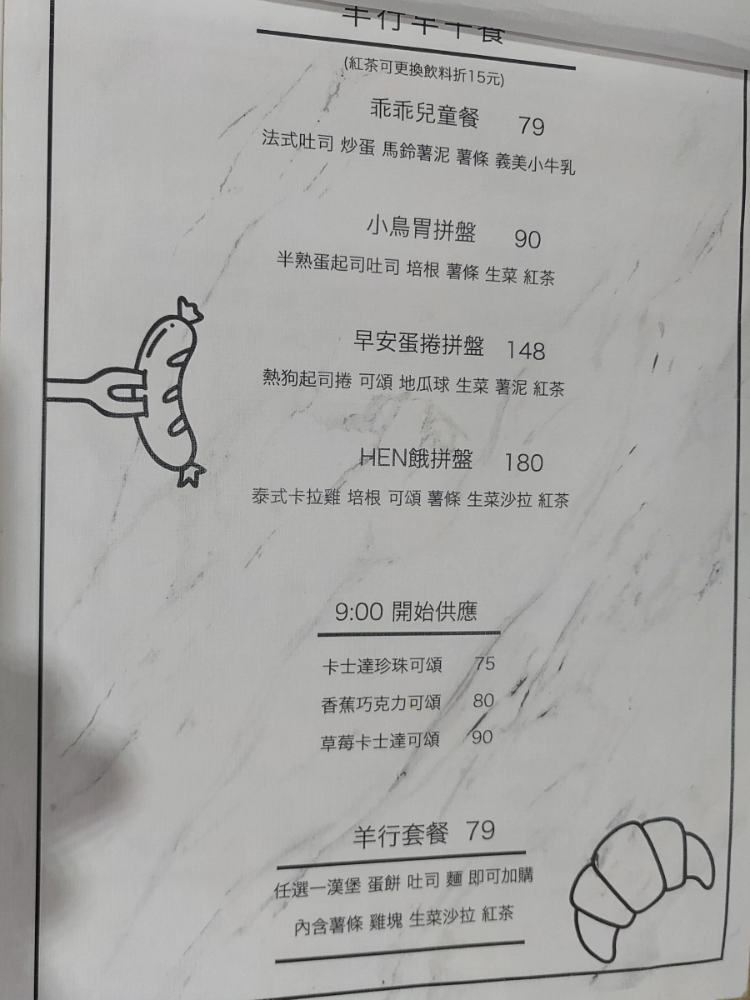
這頁似乎跟一般美而美的餐點有點像。 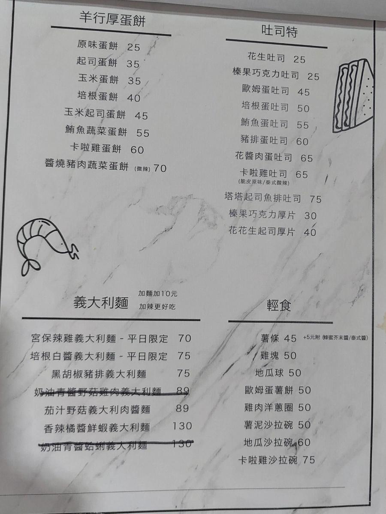
牆壁上的菜單，看起來是為了外帶飲料的客人。 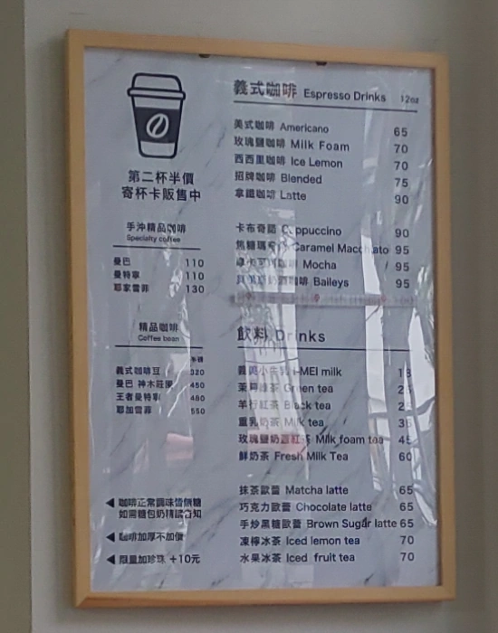
蜂蜜芥末炸豬排堡，炸豬排，很難失敗， 跟幾天前的早餐比起來，起碼有斷筋，咬斷不會太難。分明斷筋就很簡單，該做的程序。 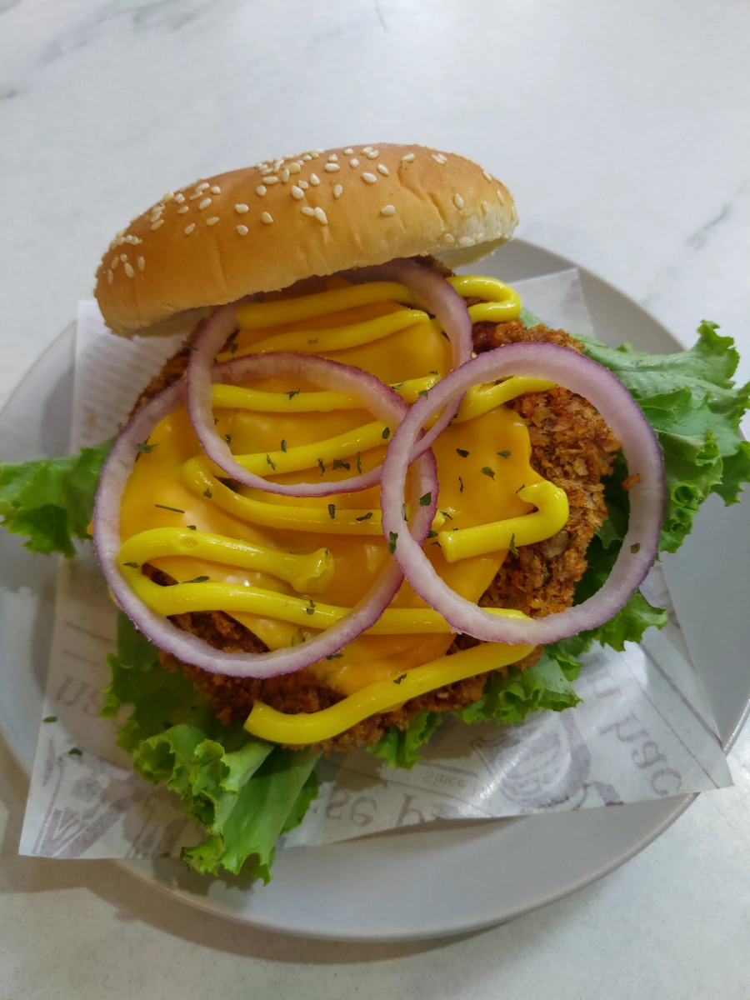
起司義式手工牛肉堡，牛絞肉手工調味兼打成牛肉堡，手法不確定是煎或炸，雖然也好吃，好像炸豬排比較習慣一點。 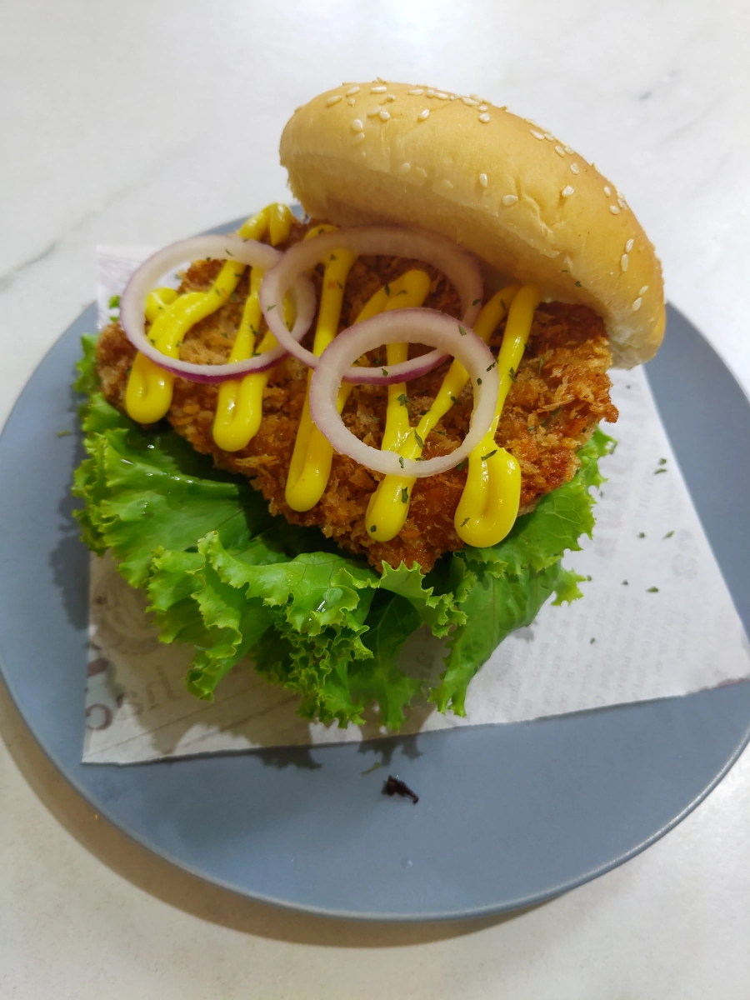
冰焦糖瑪奇朵 與 玫瑰鹽奶蓋紅茶，唉，人太多，服務人員太忙，飲料比食物還晚來。
冰焦糖瑪奇朵 甜度夠，還算好喝。玫瑰鹽奶蓋紅茶 也差不多。 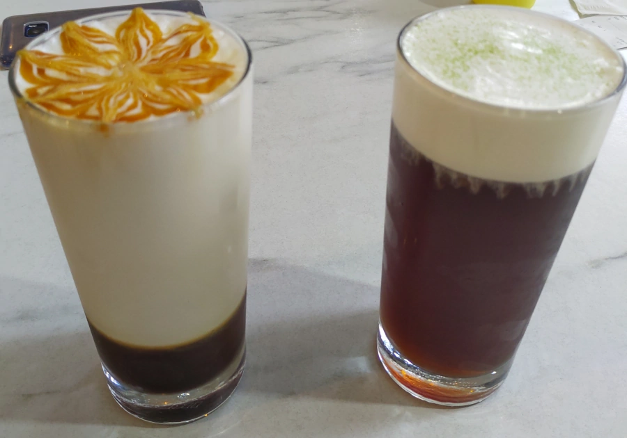
招牌咖啡，其實也不可能用到頂級咖啡豆，苦味很明顯，應該用甜味去蓋，但是他又沒弄很甜，這杯處理的不好。 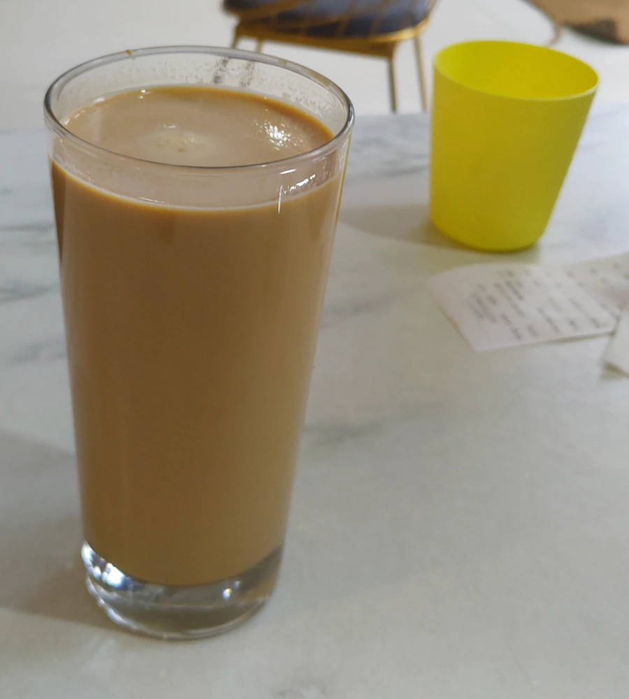
Hen餓拼盤 的照片不小心弄掉了。有一個可頌麵包，一堆薯條，一片培根，一塊早餐店的雞腿排，一個雞塊，一堆青菜。 如果把可頌麵包夾青菜，夾培根，夾雞腿排，那不是乾脆點雞腿排漢堡就好了嗎? 還多一片起司。再另外單點薯條、雞塊。 Anyway, 跟一般美而美餐廳一樣，把早餐素材擺到圓盤，當拼盤賣。
哇，三個人吃了 595元。因為都是點特色餐點，每道菜都貴一些，最後就變這樣了。不過也還好啦，東西還算好吃。 畢竟如果要吃美而美那一類的吃家裡附近的就好了，跑這麼遠，就是要吃有特色的。 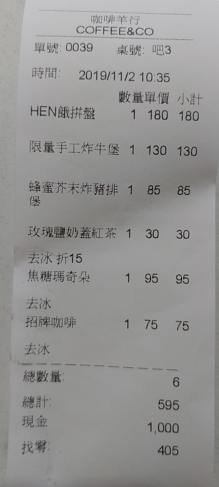
咖啡羊行 用餐感覺不錯，有機會還會再來。它好像還有一個卡士達夾珍珠的一道菜，可惜早上不想吃甜點，下次再來試。